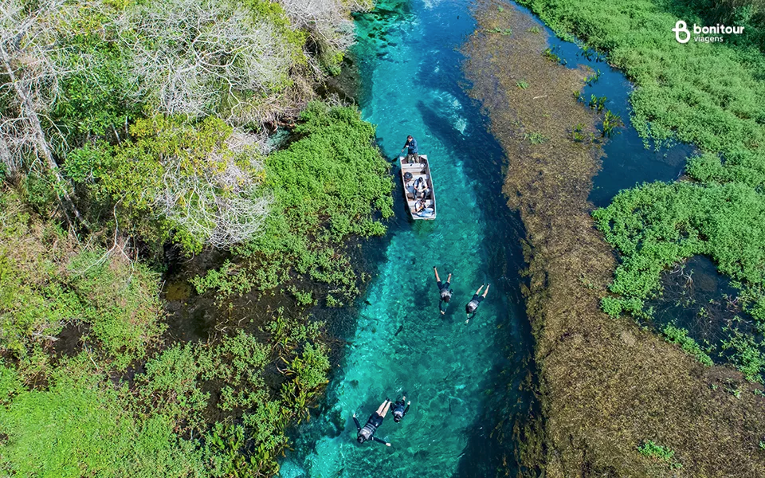
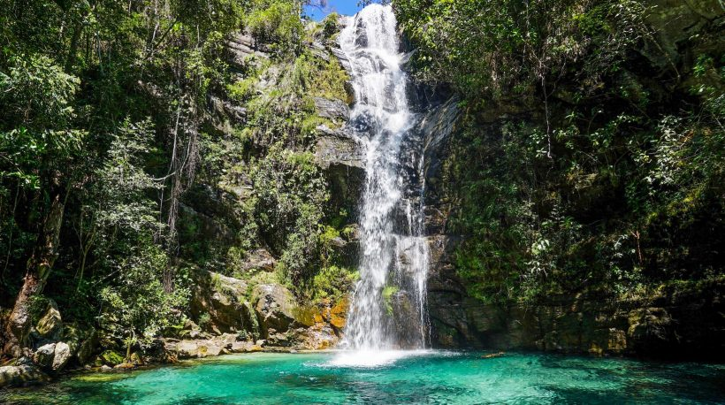
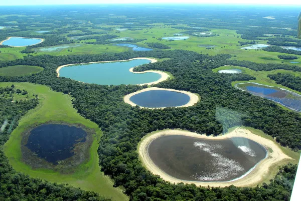
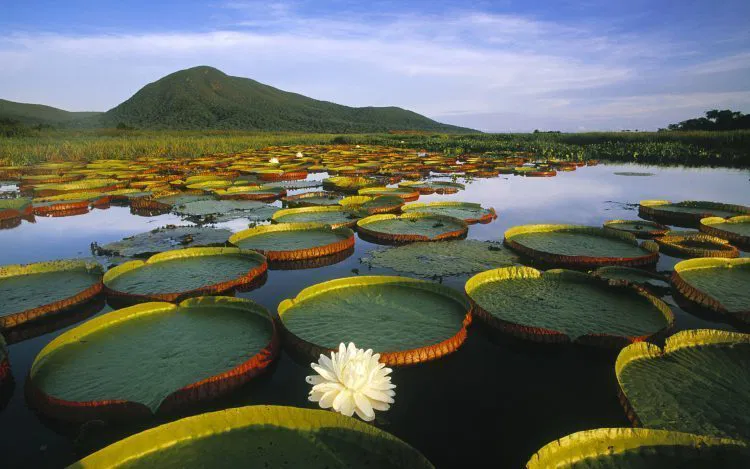

Centro-Oeste
O coração do Brasil pulsa com a natureza selvagem e paisagens de tirar o fôlego. A Região Centro-Oeste é um mosaico de biomas, onde o vasto Cerrado encontra a planície alagada do Pantanal e as águas cristalinas de seus rios. Prepare-se para uma imersão em cenários de aventura, biodiversidade incomparável e o ritmo envolvente da vida silvestre que define o interior do país.
Bonito
Conhecida como a capital brasileira do ecoturismo, Bonito faz jus ao nome com suas águas de um azul-turquesa inacreditável. Os rios transparentes convidam à flutuação entre cardumes coloridos, enquanto grutas misteriosas revelam formações rochosas milenares. É um destino onde a conservação anda de mãos dadas com a aventura, oferecendo uma experiência única de contato com a natureza intocada.


Chapada Dos Veadeiros
Um refúgio místico de cachoeiras grandiosas, cânions imponentes e formações rochosas que desafiam a imaginação. A Chapada dos Veadeiros irradia uma energia vibrante do seu Cerrado de altitude, revelando piscinas naturais de águas cristalinas e trilhas que levam a paisagens de beleza singular. É um convite à contemplação e à reconexão com a força da terra.

.png)
Pantanal
O Pantanal é a maior área úmida contínua do planeta e um santuário de vida selvagem. Suas planícies alagadas transformam-se com as estações, criando um cenário dinâmico onde jacarés, capivaras, aves exóticas e até onças-pintadas podem ser observados em seu habitat natural. Uma experiência autêntica de safári fotográfico, onde a natureza se exibe em sua plenitude.

